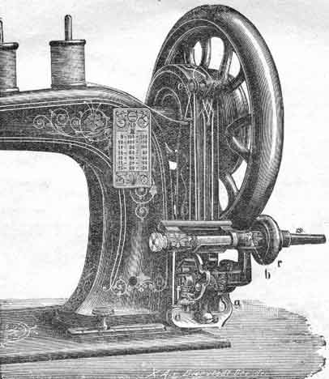
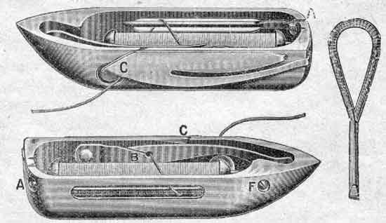
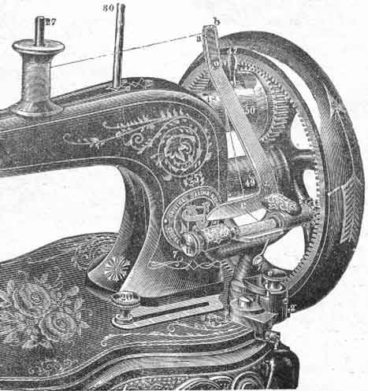

. HAVING placed the reel on one of the spindles, on the top of the arm of the machine, pass the cotton upwards through the wire eyelet (by simply slipping it into it from the back) then over and between the tension discs (c), down towards the winder from behind and under its shoulder-bar towards yourself. Then, take the bobbin in your right hand, and having threaded the cotton through the little hole in one of its brass ends, place the bobbin in the winder by fitting the little hole through which you have just passed the cotton into the corresponding pin in the right-hand socket of the winder; then place the other side of the bobbin in its position into the left- hand socket, to do which you require to draw out the left-hand piston-button, until you can drop the bobbin into both its sockets.
Having now the bobbin properly threaded and in its proper position, press the little lever (a) under the thread pressure-plate, which will cause the latter to spring flat against the bobbin; a second pressure against "b" will bring the India rubber ring in contact with the fly wheel. Disconnect the fly wheel and put it in motion and the bobbin will begin to fill and will throw itself out of action when full. Should the winder be thrown out of action before the bobbin is full enough, or only when the bobbin is too full, the defect either way can be regulated by means of the screw f on the lever d. It is advisable to regulate the screw f so, that the bobbin is not allowed to wind too full, otherwise it is apt to jam in the shuttle. Should the bobbin be only required to be partly fi11ed, the winder can be thrown out of action by simply pressing on the little lever (d) at the bottom of the left-hand side. Should the India- rubber wheel touch the fly wheel too firmly or not firm enough, the slightest turn of the screw e under the winder and facing the operator, will regulate a proper tension between the two wheels.

Hold the shuttle in the left hand, point towards yourself, and the bobbin in the right. Place one end of bobbin in the centre piston in point of shuttle, pressing bobbin down into the hole on the other end until it makes a slight, click".
The cotton must come from under the bobbin on the bar-side of shuttle.
Now proceed to thread the shuttle as illustrated above. Take the cotton and pass the same round circle A in end of shuttle, after which it will be seen to be round the bar; next take cotton across shuttle, pass it through groove into the hole B, and then by drawing cotton gently towards point of shuttle, it will pass under the spring to point C, as shewn in the illustration above, when it is ready for use.
By drawing cotton to the right after it is threaded, i.e., away from the point, the tension of the shuttle can be tested -- whether too tight or vice versa. A small screw-driver is supplied with the shuttle for the purpose of regulating the tension by the screw F; by turning screw to the right the tension is tightened, and to the left, the tension is loosened.
Care should be taken to oil both ends of the bobbin when it is fixed in the shuttle ready for work, in order that the same revolves freely.
BEFORE you begin to spool throw the fly wheel out of gear by pushing the connector (47) away from you as far as it will go.
Then pass the cotton into the right hand slot (b) of the thread guide round and between the discs into the left hand slot (a) down towards and under the steel bar (c) to the bobbin; thread up the bobbin and put it so threaded in position precisely as described. (in this book) for the other winder. To put the winder in gear, press the shoulder bar (h) against the arm of the machine when the little cog wheel attached to the spooler on the right will grip the cogs of the fly wheel. To disconnect the spooler simply press on the flat button (e)
The screw f serves to regulate the position of the winder cog in connection with the fly wheel cog; if they do not meet sufficiently near to each other turn the screw f to the left, if they are too close turn the screw f to the right. The screw g simply serves to steady the regulation arrived at by the screw f and should always be screwed firmly against the rim of the bed plate.

PLACE the material under the presser-foot (18), lower the presser- bar with the aid of handle 15, drive the machine fast or slow, as you may desire, but at a regular and even pace. If you want extra pressure for thick material, screw the nut on the top 18 of the presser-bar downwards. If you want less pressure for fine and delicate materials, screw the nut upwards. Do not pull or push the work through the machine; you will break needles and make bad work by doing so. The machine will feed quite regularly by itself. ln crossing thick places, or in seams, go slower, and if necessary, when a great thickness occurs, raise the presser-foot slightly.
RAISE the needle-bar to its highest point aud then the presser-foot by means of the lifter (15). Draw the work out from you to the left and cut the threads leaving about three inches in order to be long enough to start afresh.
TO adjust the upper tension turn the little thumb-screw No. 16 on the top of the machine slightly to the right to tighten the tension, and to the left to loosen it. The stitch is most perfect when it appears alike on both sides. If the thread forms loops underneath the fabric the upper tension is too loose. The "Naumann" machine is so designed that very little alteration of tension is needed. Fix it right once, and then you may mostly let it alone.
is the thumb screw 20 on the right of the machine. To lengthen the stitch loosen the screw and slide it to the right; to shorten it, slide the screw to the left. When adjusted always re-tighten the screw.
THE SLACK-THREAD-PIN (12) presses down the check-lever (6). It is adjusted properly for all classes of general sewing, and should never he altered unless the thread breaks in sewing very thick cloth; then loosen the screw (12) and adjust the slack-thread-pin a bit lower but very little. Should it become displaced, re-adjust it, according to the following rule: -- It should begin to press down the check-lever when the needle-gauge mark is fully one eighth of an inch above the top of the arm.
THE CHECK- SPRING (2) draws up check- lever (6). Should it break or wear out, insert another as follows; let the needle - bar (45) rest when the gaugemark is level with the top of the arm, take out the screw that holds the spring, draw the check lever out half way, holding it while you put in the spring with its hook end downward, then move the check-lever back into its place. Replace the screw, by turning it a few times only, press down the end of the spring into the first hole (or into the second or third hole, if using coarse thread) and tighten the screw.
THE LEATHER BAND must be tight enough to work the machine without slipping. If it is too loose, cut about half an inch from one end and refasten is as before with the strap hook.
IF THE NEEDLE-THREAD BREAKS when the needle is adjusted properly, it is caused by the tension being too tight, the eye of the needle being too small, the slack-thread-pin becoming displaced (see Note above), a roughness on the shuttle or its carrier, or sometimes, when using coarse silk, by the point of the needle being bent. The stitch plate is also sometimes the cause of its breaking, if not rightly screwed up; the needle has to move freely in the centre of the needlehole and not to touch the shuttle.
IF THE SHUTTLE-THREAD BREAKS, loosen the tension by the screw in the hole F. (See page 6 "Threading the Shuttle")
IF THERE ARE MISSED STITCHES, they are caused by the needle being adjusted too high or too low, by it being bent away from the shuttle, it being too small for the thread or by the point of the shuttle having become blunt, if the machine is dirty and not well oiled so that is has not a regular motion, if the long groove of the needle is not exactly' placed towards the operator or even stands towards the shuttle.
IF THE NEEDLE-THREAD FORMS SMALL LOOPS on the top of the fabric, it is caused by the check-spring (2) having become broken (see page 8:, The Check-Spring"), and sometimes, when sewing whit coarse silk or linen thread, by the needle being too fine or its point being bent.
IF THE STITCHES VARY IN LENGTH while hemming or sewing very thick and soft fabrics, loosen the feed raising cam (e) and move it a little to the right to raise the feed-points, then tighten it firmly', do not raise the feed-points too high: when they drop down in working, they should be a little below the surface of the needle-plate.
SEAMS IN HARD COTTON FABRICS should be passed over slowly, and, if extra thick, rub a little white soap on them, which will facilitate the passage of the needle.
| 1) 12 assorted needles, | 11) 1 ruffler, |
| 2) 6 shuttle bobbins, | 12) 1 ordinary sewing foot, |
| 3) 1 straight guide with screw, | 18) 1 adjustable binder, |
| 4) 1 adjustable hemmer, | 14) 1 small forked guide, |
| 5) 1 foot hemmer, | 15) 1 quilter, |
| 6) 1 narrow foot hemmer, | 16) 1 extra check-spring, |
| 7) 1 feller, | 17) 1 extra - needle - plate with large hole, |
| 8) 1 adjustable corder, | 18) 1 screwdriver, |
| 9) 1 big corder, | 19) 1 oiler, |
| 10) 1 adjustable braider, | 20) 1 book of instructions. |
THE High Arm Family Machines (Hand or Treadle) if provided with the Darning and Embroidery Apparatus are also furnished with:
1 pair of darning rings,
1 darning foot,
1 extra thick needle plate.
~~~~~~~~~~~~~~~~~~~~~~~~~~~~~~~~~~
The machines for manufacturing purposes are only provided with the necessary accessories.